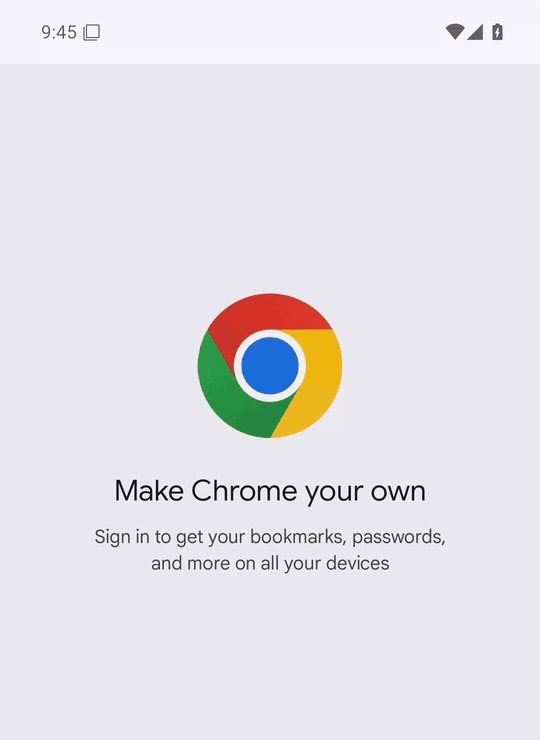

$ tuxport
Run Linux on your Android phone
A full terminal with Alpine Linux bundled. Install the app and you are at a shell. No root, no setup.

Details
- Distribution
- Alpine Linux 3.24 bundled, Debian from Settings
- Requirements
- Android 11 or later, 64-bit ARM device
- Terminal
- Ghostty's libghostty-vt, tabs, extra keys, scrollback find
- Programs
- Unmodified ARM64 binaries: apk, Python, Node.js, Go, Rust, tmux
- License
- GNU AGPL 3.0 or later, source on GitHub